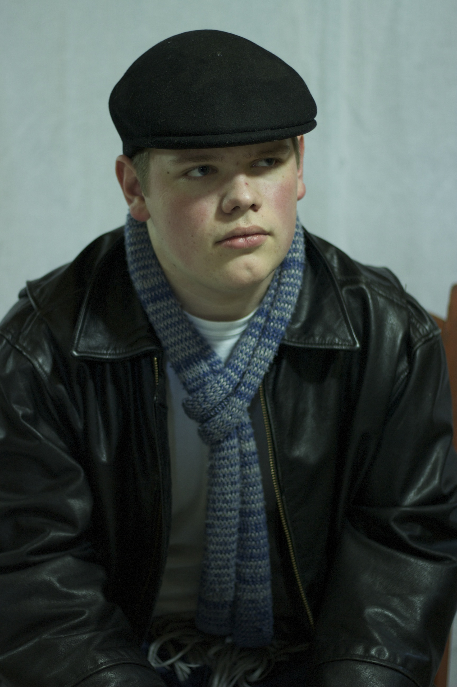
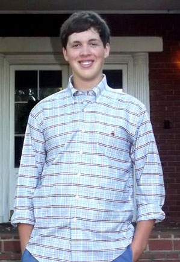
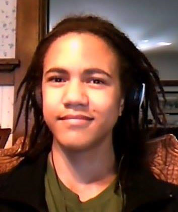
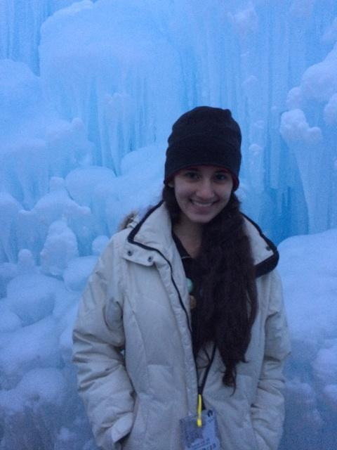
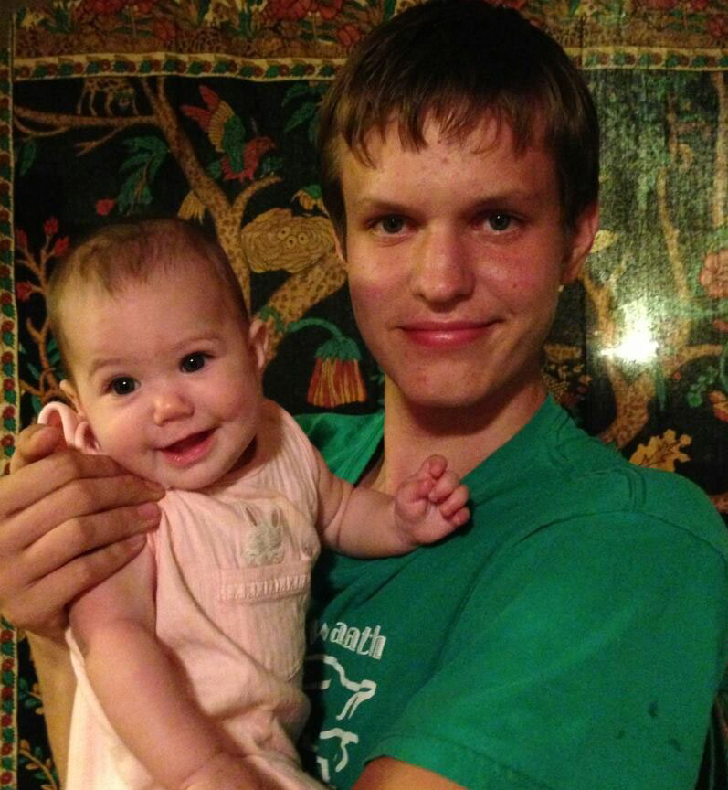

I joined West Winds three years ago, I don't remember what compelled me to, any reason or rhyme to my decision, It just sort of happened. That year I jumped in head first and never regretted a second of the experience. My first year I applied to become the layout editor of the 2012 edition, “Journeys,” I got the position, and to the best of my knowledge, that year as a young and brash sophomore, I became the youngest Layout Editor West Winds has ever seen. West Winds became an integral part of my high school experience, week to week I would go to meetings and slowly but surely, gather concepts and ideas, a conglomerate, that came into being as this year's edition, “Legacies.” West Winds spurred in me a deep love for art, literature and the English language, ultimately driving me to my decision to attend Westminster College and pursue a degree in English.
West Winds, however, is not my only passion, I am a dancer, a member of the West High School Dance Company. I am a journalist, and a staff member on the Red and Black. I am a singer and a song writer, having taught myself to play the guitar and the ukulele. I am an avid reader, writer and learner, always eager to absorb some new information and synthesize it, placing it into a larger context. I am a history buff and a massive music fanatic.
Hello strangers! This is my bio I guess, so, enjoy yourself! I joined West Winds in hopes to help expand the literary elements in West. I never really knew what to except from this but this has become a new interest to me.
I enjoyed spending time with those on the staff and spending time after school with them. There was NEVER a dull moment! I love photography, some of my photos are in here! I hope you like them!
I am a website editor—I made this year's online edition, working with the layout and submissions editors. This has been my first year with West Winds, and I joined because I have always admired the work of previous years' staff and submitters. I'll be glad if I have boosted the presentation and accessibility of this year's wonderful collection of art.
I am a junior and the submissions editor for West Winds. This is my first year on the staff and I have had such a great time and met so many wonderful people that, without a doubt, I will be a part of the magazine next year as well.
This year, West Winds is celebrating legacies and as I say goodbye to all of the graduating staff members, I know they are going into the world to create their own legacies. I respect them and try to support them the best I can and one day I hope to leave behind a legacy of my own.
I am one of the two Written Submissions Editors for West Winds this year. Carolyn and I sorted through the submissions going through the emails, and we helped decide which submissions should be accepted or not.
This is my first year of being on the West Winds staff, and I got involved because I love writing and enjoy reading pieces that other people around my age have written. Spending the year involved with this magazine has been a really constructive experience and I will certainly help out again next year!
Hey I'm Brigit McDannell, I'm a senior at West High. I love cats, Netflix, and Planned Parenthood. Sometimes, I say silly things. Photography is a great hobby of mine and it has been a true privilege to be apart of West Winds these past four years.
Being chosen to design and paint the cover of the 100th issue is actually a huge honor. Although, I did have troubles with it... for seven months, I'm not going to lie. At first, I put too much thought into it, thinking that it had to be Mona Lisa perfect.
It took a while, but I eventually loosened up, and took the ideas given to me, and made my own variation, using colours and designs that I felt fit the magazine as a whole. I'm actually proud with how it turned out.
And because it took me forever to do, I have a deeper bond with it. If it wasn't for Emma's sweet voice always asking if it was done, my mother for nagging me constantly, the on and off art blocks I faced with it, Purity Ring, and the people who decided to put Clueless on Netflix, I never would have finished it.
I don't like labels, and I don't like describing myself. But anything for Emma... I'm really just a wilderness kid with Wyoming roots who seeks pure interaction. I've loved to write since I learned to hold a pencil...incorrectly, but that doesn't matter because I can still scrawl out letters.
I think words are a beautiful but incomplete medium of communication: words alone cannot explain anything to a degree of utter perfection. Beyond this, there is always something new to say, to create—an experiment, if you will. And that, my friends, is marvelous and magnificent and motivating. Keep on writing, drawing, painting, dancing, singing, creating—you'll never regret it.
I wear an ivory letter A with a passion for cats, lacrosse, and Netflix. This is my second year on the staff of West Winds. In my eyes, I see legacy as a new beginning from an arduous journey.

Chancelor William DeLaMare, the relentlessly sardonic helper monkey of doom. I joined from curiosity regarding what West Winds is, and I found my answer.
West winds has been a family of sorts, it bonds us together and makes us think while we laugh.
I have been glad to provide my support, from helping with the poetry slams to helping the other members out on a bad day, usually with a level I of sarcastic empathy.
It has been a joy working on this hundredth West Winds, I hope you find as much joy reading it!
I joined West Winds because I love poetry and the visual arts, and I wanted to meet people with similar interests so I could blather about modernist poetry and abstract expressionism without people calling me a snob to my face.
I also wanted to get the chance both to be awed by other teenager's work and to occasionally show off my own. I'm an aspiring artist and poet who dreams of one day living in a minuscule New York City apartment with 10 artist friends. I draw inspiration from the people around me and hipster photos on the internet.
Hey! I'm Vismaya Kharkar, a freshman at West High School. I love to be busy, so I'm involved in a lot of after-school clubs, including swim team, Model UN, Science Olympiad, and, of course, West Winds. The main reason that I joined West Winds Magazine is that I love to write.
In the little free time I have, I write poetry and stories, and I'm always daydreaming about new ideas for fanfictions or novels. I've also been involved in spelling bees for a while, and studying for them has given me a newfound appreciation of words from other languages.
I think that it's fascinating how we use words as a form of art to communicate the pictures and emotions in our heads and to have an impact on the world around us. I see West Winds as the consummation of the emotions, thoughts, and dreams of West High School as a whole, and I think that it's amazing that I can be a part of it.
My name is Fiona Spas, and I am a senior at West High. I joined West Winds because most of my friends were involved in some capacity, and I needed another extracurricular activity.
I had no idea what I was getting into, but it turned out to be incredibly rewarding to work on the magazine. As a general staff member, I sorted and typed various submissions, and pretty much did whatever job needed to be done.
The theme of this year's magazine is “Legacies.” I consider this magazine a legacy I leave for my peers and fellow students, which I will look back on with pride.
I joined West Winds because I love literature and the people in this group are cool. I like being around creative people and seeing what students make. I'm a Junior this year, and look forward to one more year of working on such a worthy project.
My job was to give feedback and help sort through large amounts of work for the editors. I love it.
I'm Vincent and I joined West Winds because I love poetic art from peers, I love seeing the creative side of fellow students I see in the halls all year. I help out West Winds by reading and reviewing what I think should be heard by all through our magazine or website.
A little something about myself is that I love to write and express my creative side. I'm a senior who is going to graduate West and become a video game programmer at SLCC and hopefully transfer to the U of U.
I am a all around friendly person who enjoys getting to know a background of everyone's style. I love to see different cultures coming together to make something new and exciting. I enjoy music from a lot genres and I love to discover new music especially if its coming from peers.
My goal this school year was to meet many different people and I came across some incredible people in West Winds and just fellow students.
My wish for everyone is that they do what they love no matter what others say, do what makes you happy and if you can make a life of it you'll enjoy life more I promise you will. Keep confident in yourself and remember once a panther always a panther.
Name's Lexus Ace, senior in high school, I am pretty awesome, gorgeous, and weird. I joined West Winds because of my friends in it and the fact that I love being sassy to Tristan, Cole and Emma.
  My name is Izzy Srivastava. I am a freshman, and I joined West Winds approximately six weeks ago. I think the magazine is a wonderful publication that showcases some of the tremendous artistic talent at this school, and I am both very thrilled and very honored to be a part of it, if a somewhat recent addition.
